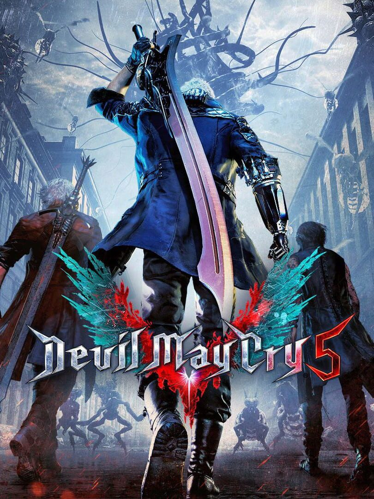

Devil May Cry 5
Devil May Cry 5
Details
|  | |
| Spielzeit | Nicht gespielt |
| Letzte Aktivität | Nie |
| Hinzugefügt | 28.12.2021 1:09:17 |
| Modifiziert | 10.11.2022 13:56:41 |
| Fertigstellungsstatus | Not Played |
| Bibliothek | Steam |
| Quelle | Steam |
| Plattform | PC (Windows) |
| Veröffentlichungsdatum | 07.03.2019 |
| Community Bewertungen | 93 |
| Kritiker Punkte | 89 |
| Benutzerwertung | |
| Genre | Action |
| Entwickler | CAPCOM Co., Ltd. |
| Verleger | CAPCOM Co., Ltd. |
| Eigenschaft | Achievements Cloud Saves Controller Support Co-op Multiplayer Remote Play Single Player Steam Karten |
| Links | Communityhub Diskussionen Guides Neuigkeiten Shopseite PCGamingWiki Errungenschaften |
| Tag | |
Beschreibung
Devil May Cry 5 + Vergil
The ultimate Devil Hunter is back in style, in the game action fans have been waiting for. Now includes the Playable Character: Vergil downloadable content (also available separately).
A brand new entry in the legendary action series, Devil May Cry 5 brings together its signature blend of high-octane action and otherworldly original characters with the latest Capcom gaming technology to deliver a graphically groundbreaking action-adventure masterpiece.
Please check your previous purchases to avoid duplication.
Devil May Cry 5 Deluxe + Vergil
The ultimate Devil Hunter is back in style, in the game action fans have been waiting for.
The Deluxe Edition includes the full game, Playable Character: Vergil (also available separately), and the following additional content:
- Devil Breaker weapons: Gerbera GP01, Pasta Breaker, Sweet Surrender, Mega Buster
- Dante weapon: Cavaliere R
- Battle music: 3 tracks each from Devil May Cry, Devil May Cry 2, Devil May Cry 3, and Devil May Cry 4
- Alternative voices: Style Rank Announcers, Title Calls
- Live Action Cutscenes
Note: Devil Breakers and alternative music/voices/cutscenes are usable from mission 2 onwards. Dante weapon Cavaliere R can be used after acquiring the the Cavaliere. Use the Gallery > Jukebox option to change music/voices and the Options > Cutscene Customize option to change cutscenes. Live Action Cutscenes voice audio is in Japanese only.
Please check your previous purchases to avoid duplication.
Digital Deluxe Edition
.jpg?t=1637363400)
About the Game
The Devil you know returns in this brand new entry in the over-the-top action series available on the PC. Prepare to get downright demonic with this signature blend of high-octane stylized action and otherworldly & original characters the series is known for. Director Hideaki Itsuno and the core team have returned to create the most insane, technically advanced and utterly unmissable action experience of this generation!The threat of demonic power has returned to menace the world once again in Devil May Cry 5. The invasion begins when the seeds of a “demon tree” take root in Red Grave City. As this hellish incursion starts to take over the city, a young demon hunter Nero, arrives with his partner Nico in their “Devil May Cry” motorhome. Finding himself without the use of his right arm, Nero enlists Nico, a self-professed weapons artist, to design a variety of unique mechanical Devil Breaker arms to give him extra powers to take on evil demons such as the blood sucking flying Empusa and giant colossus enemy Goliath.
FEATURES
- High octane stylized action – Featuring three playable characters each with a radically different stylish combat play style as they take on the city overrun with demons
- Groundbreaking graphics – Developed with Capcom’s in-house proprietary RE engine, the series continues to achieve new heights in fidelity with graphics that utilize photorealistic character designs and stunning lighting and environmental effects.
- Take down the demonic invasion – Battle against epic bosses in adrenaline fueled fights across the over-run Red Grave City all to the beat of a truly killer soundtrack.
- Demon hunter – Nero, one of the series main protagonists and a young demon hunter who has the blood of Sparda, heads to Red Grave City to face the hellish onslaught of demons, with weapons craftswoman and new partner-in-crime, Nico. Nero is also joined by stylish, legendary demon hunter, Dante and the mysterious new character, V.